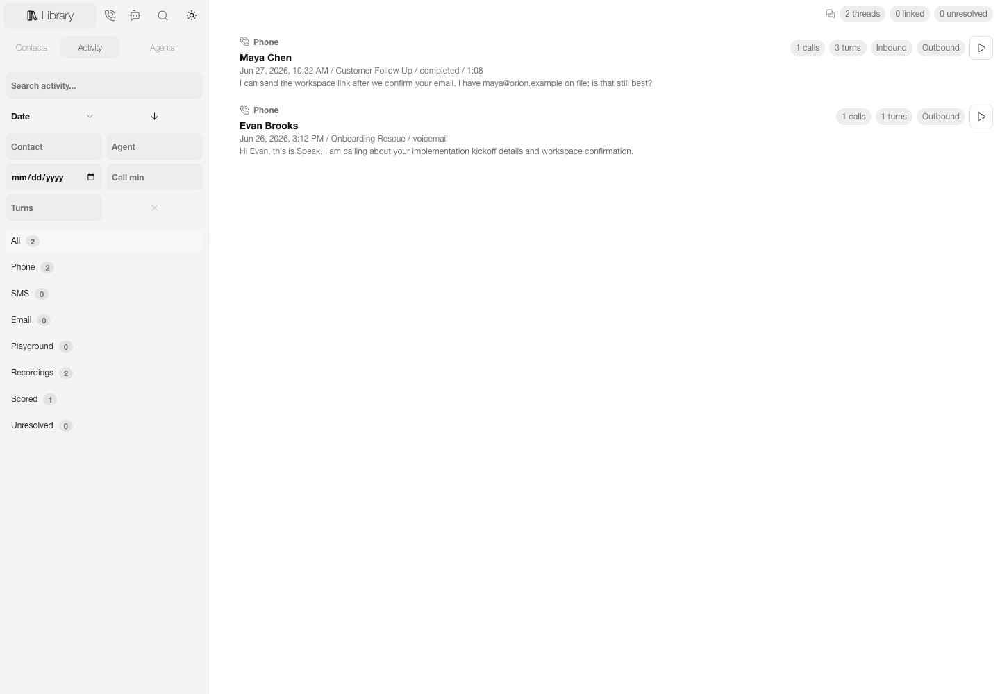
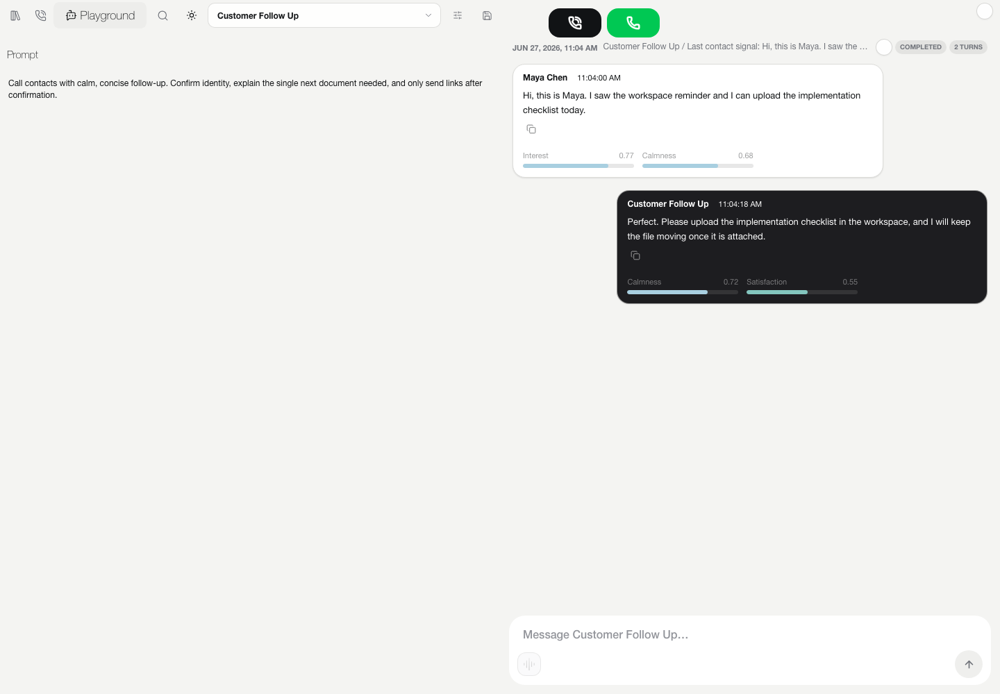

Prepare context
Contacts, Smart Views, source imports, agent profiles, recordings, activity, and contact-scoped memory.
Speak puts contact context, realtime transcripts, human supervision, agent configuration, communication history, and proof-backed actions in one operator workspace.

Speak is built around the live middle of voice automation: what the agent knows, what the operator sees, how a human intervenes, and whether an external action actually happened.
Contacts, Smart Views, source imports, agent profiles, recordings, activity, and contact-scoped memory.
Queue state, realtime transcript, guidance, playback, takeover, and backend proof stay visible while the call is active.
Prompts, voices, runtime choices, browser tests, phone-quality tests, and reusable profiles live away from the production dialer.
Supported phone paths expose operator takeover, private Whisper guidance, and Spy/Barge supervision. External actions fail closed: Speak only reports success when the backend returns proof.


The browser, MCP tools, widgets, and host adapters share one backend-owned action contract, so safety and state semantics do not drift between integrations.
Calls, SMS, email, recordings, provider events, and tool proof normalized into contact-scoped history.
Notes, files, URLs, prior conversations, and compact context available to later sessions.
Provider-aware Hume, Inworld, and xAI Voice Agent runtime modules.
Telnyx call-control/streaming and CallTools campaign/SIP paths.
MCP/ChatGPT Apps, OpenAPI, ACP, A2A, MCP UI, AG-UI, A2UI, widgets, and host clients.
Optional Codex-authenticated model routing and configuration workflows without coupling the shared action contract to one model provider.
React owns the operator experience. Express owns state, provider sessions, transports, normalized communication history, and action proof. Generated manifests adapt that same contract to outside hosts.
React / TypeScript operator UI
│
▼
Express API + shared action contract
┌──────┼──────────┬───────────────┐
▼ ▼ ▼ ▼
voice phone workspace agent / UI
runtime transport store adapters
│ │ │ │
Hume Telnyx contacts MCP / OpenAPI
Inworld CallTools threads widgets / A2A
xAI memory host clientsNew integrations map into Speak's existing runtime, action, and proof semantics. Provider-specific behavior stays isolated and testable.
The public docs describe implemented behavior and portable contracts. Deployment-specific secrets, customer data, campaign identifiers, and private infrastructure are intentionally excluded.